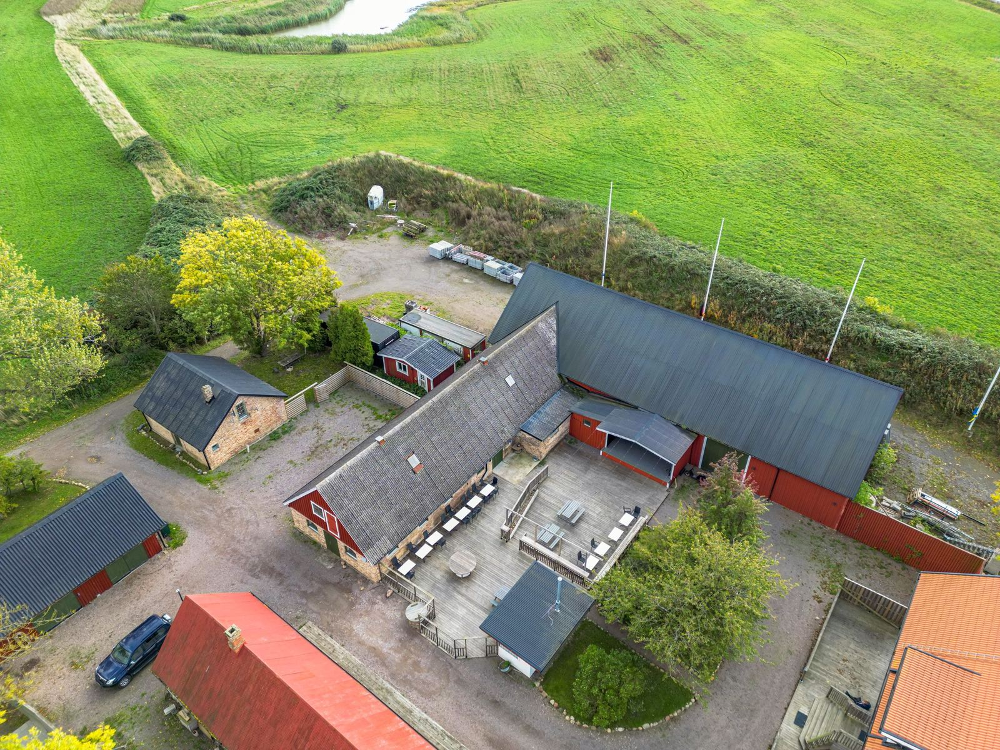

Echa un vistazo
Pasea por la finca
Asómate a las habitaciones y al salón de fiestas en 360°, o sobrevuela los terrenos.

La entrada Aquí entras y aparcas. El aparcamiento es gratuito para los huéspedes.
Arrastra la imagen para mirar alrededor. Haz clic en los anillos del suelo para avanzar.


Desde arriba
Sobrevuela Gammeleksgården
Un minuto sobre la finca, los campos y la E6, con el Öresund al fondo.
Desde el aire
La finca en pleno campo abierto


